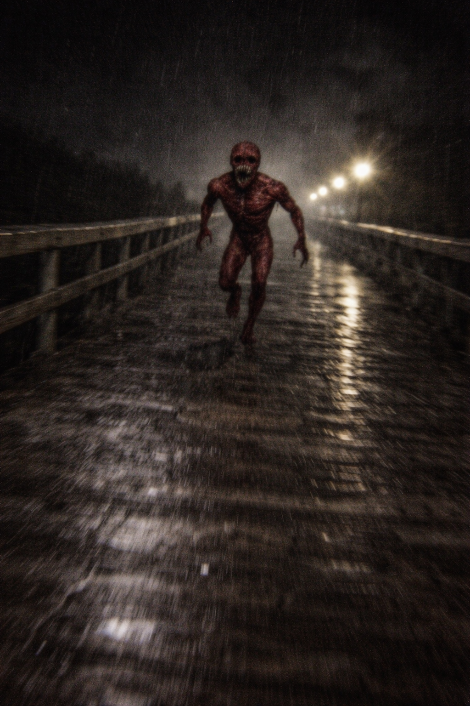
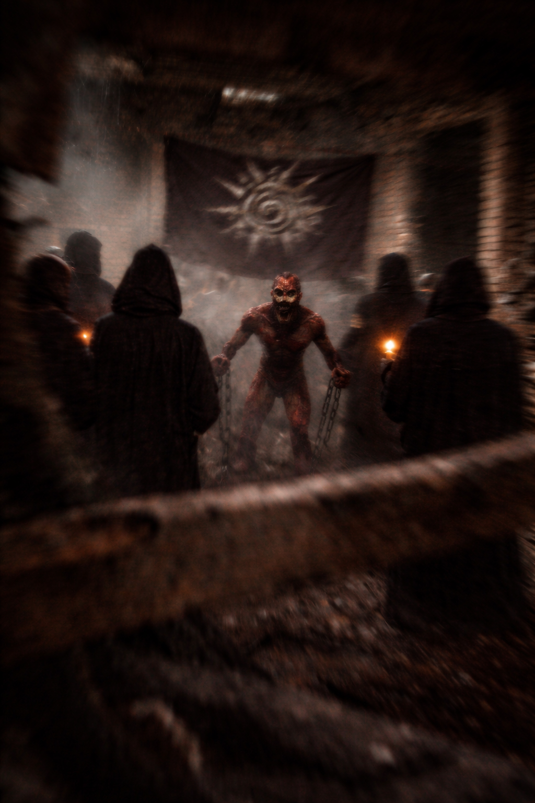

Digite a senha:


Um investigador da polícia, cuja identidade foi removida dos registros oficiais, iniciou uma investigação independente após múltiplos relatos sobre um possível culto operando em uma estrutura abandonada.
De acordo com os dados recuperados, o agente conseguiu infiltrar-se e registrar imagens do grupo. No entanto, após o contato inicial, algo não identificado passou a persegui-lo.
A última transmissão do investigador contém ruídos, respiração acelerada e um som descrito por analistas como "não humano". Após esse ponto, não houve mais comunicação.
Seu corpo nunca foi encontrado.
Na mesma noite, foram registrados 11 mortos nas proximidades. Os relatórios oficiais classificaram o ocorrido como "incidente isolado".
Diversas inconsistências nos registros indicam interferência externa. Evidências sugerem que uma organização desconhecida atuou para encobrir o caso.
Status: ARQUIVO INCOMPLETO